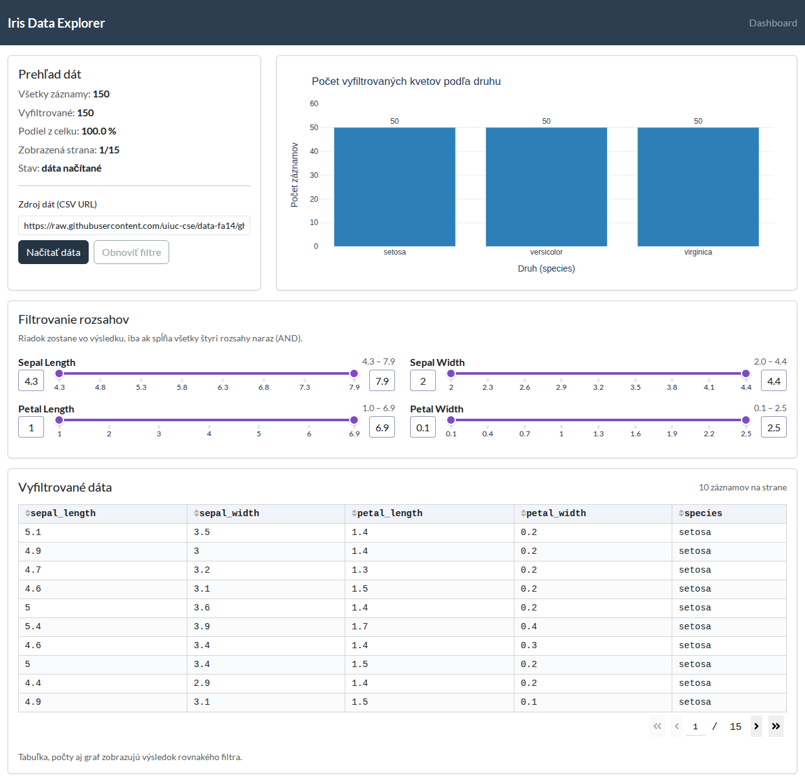
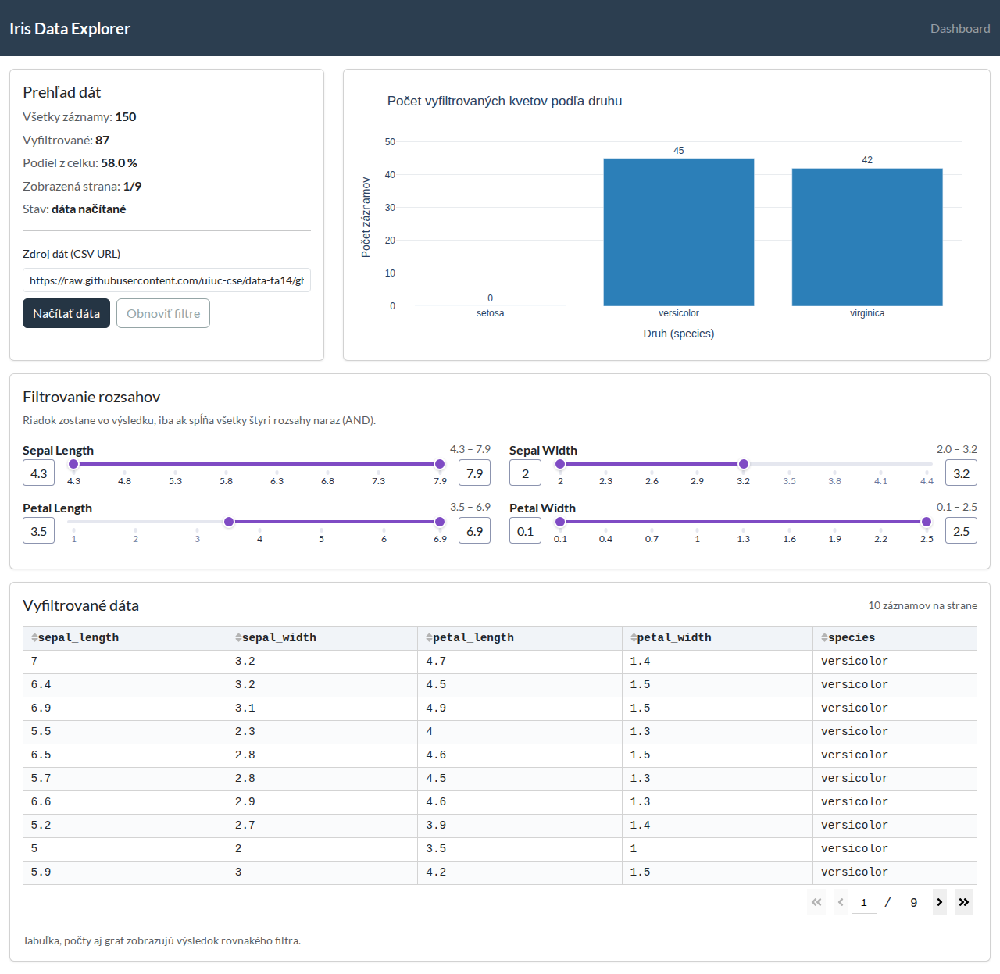
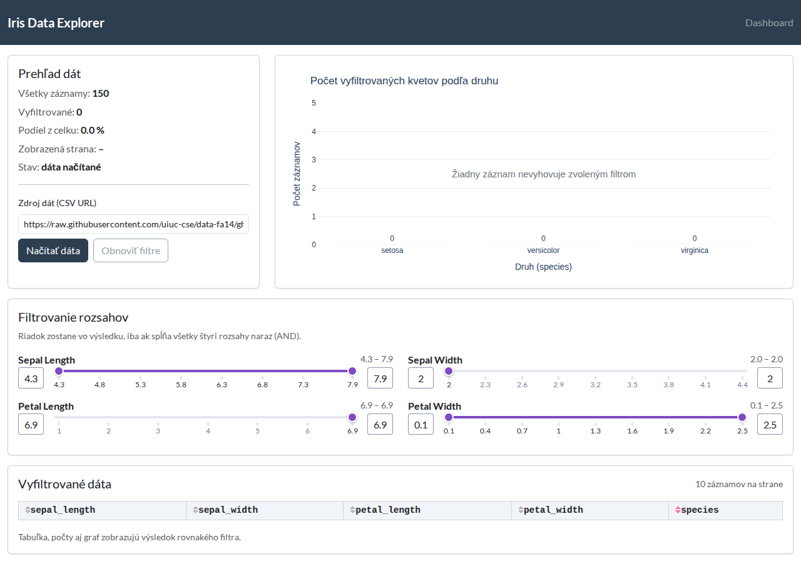
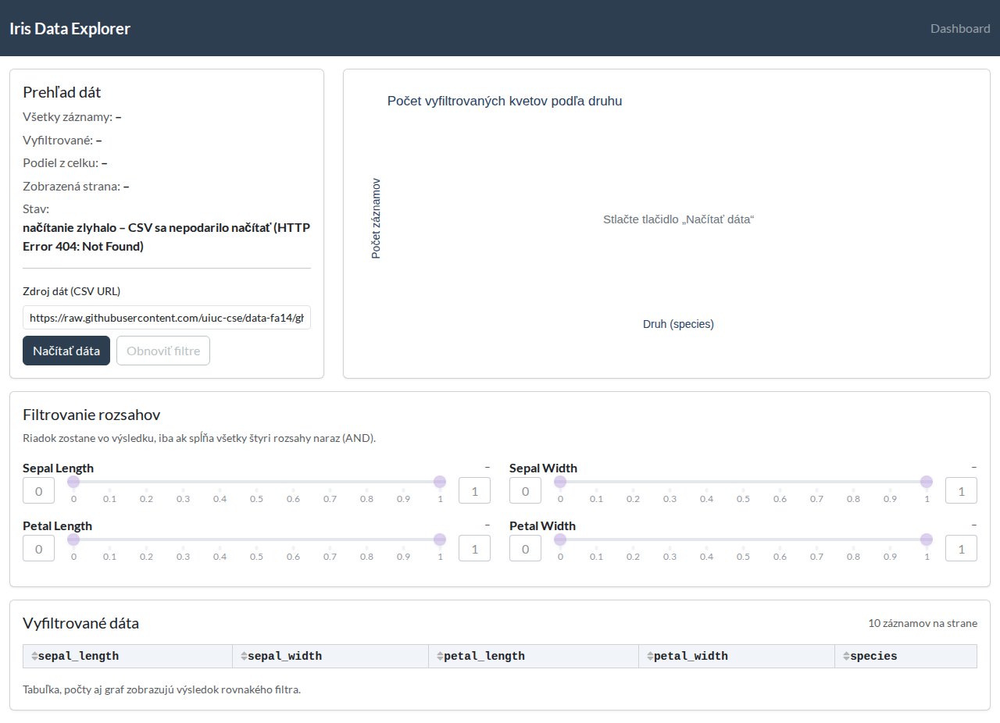

dash_irisWebová aplikácia v Plotly Dash s Bootstrap témou (balík dash-bootstrap-components). Iris dataset sa
zo zadanej CSV URL načíta až po stlačení tlačidla Načítať dáta; pri štarte aplikácie sa pandas.read_csv()
nevolá. Načítaný DataFrame drží modul backend/data_service.py (bez dcc.Store).
Štyri komponenty dcc.RangeSlider filtrujú dáta podľa sepal_length, sepal_width,
petal_length a petal_width; podmienky sa spájajú logickým AND. Jeden vyfiltrovaný DataFrame
napĺňa naraz informačný panel, stĺpcový graf počtov druhov (s hodnotou nad každým stĺpcom) a tabuľku
dash_table.DataTable so stránkovaním po 10 riadkoch.
Rozšírenia: textové pole pre vlastnú CSV URL s kontrolou požadovaných stĺpcov (chybná URL alebo nevhodný súbor zobrazia správu a umožnia nový pokus) a tlačidlo Obnoviť filtre, ktoré vráti slidery na celý rozsah datasetu.




dash_iris/
|-- app.py vytvorenie aplikácie, Dash Pages, Bootstrap téma FLATLY, navbar
|-- requirements.txt dash, plotly, dash-bootstrap-components, pandas
|-- README.md inštalácia a spustenie
|-- assets/styles.css drobné vizuálne úpravy
|-- pages/home.py rozloženie hlavnej stránky (karty, slidery, graf, tabuľka)
|-- backend/data_service.py načítanie a kontrola CSV, filter (AND), počty druhov
`-- callbacks/
|-- iris_callbacks.py registrácia callbackov 1 – 3
`-- figures.py stĺpcový graf a prázdny graf s oznamom
Obr. 5: Tok dát. Modré bloky sú vstupy (Input/State), sivé callbacky, oranžové backend, zelené výstupy (Output). Prerušované šípky ukazujú reťazenie: výstup jedného callbacku je vstupom ďalšieho.
callbacks/iris_callbacks.py)| # | Callback | Input | State | Output | Čo robí |
|---|---|---|---|---|---|
| 1 | load_or_resetprevent_initial_call, running |
tlačidlo Načítať dáta (n_clicks); tlačidlo Obnoviť filtre (n_clicks) |
CSV URL (url-input.value) |
stav načítania, celkový počet, disabled tlačidla Obnoviť, min / max / value / disabled každého zo 4 sliderov |
Po kliknutí načíta CSV cez backend, skontroluje stĺpce a nastaví filtre podľa skutočných hodnôt datasetu; počas behu je tlačidlo zablokované (running), pri chybe zobrazí správu a vráti stav pred načítaním; tlačidlo Obnoviť iba vráti slidery na celý rozsah. |
| 2 | apply_filtersprevent_initial_call |
value všetkých 4 RangeSliderov |
– | vyfiltrovaný počet, podiel v %, aktuálne rozsahy pri slideroch, figure grafu, data a page_current tabuľky |
Z hodnôt sliderov zostaví AND filter, backend vráti jeden vyfiltrovaný DataFrame a z neho sa naraz naplní panel, stĺpcový graf (vždy tri druhy, chýbajúci má 0) aj tabuľka; bez načítaných dát vráti prázdny stav. |
| 3 | show_page_info |
page_current a data tabuľky |
page_size tabuľky |
text „Zobrazená strana x/y“ v paneli | Pri stránkovaní alebo zmene filtra prepočíta aktuálnu stranu a počet strán. |
pip install -r requirements.txt python app.py # aplikácia beží na http://127.0.0.1:8050